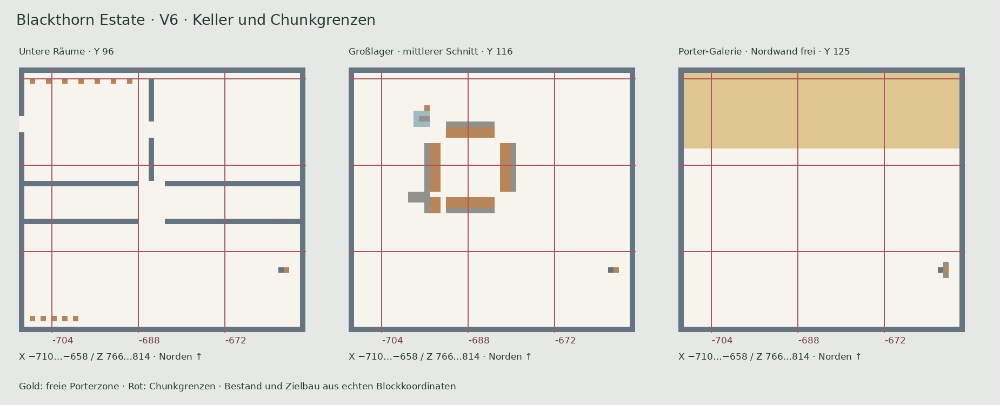
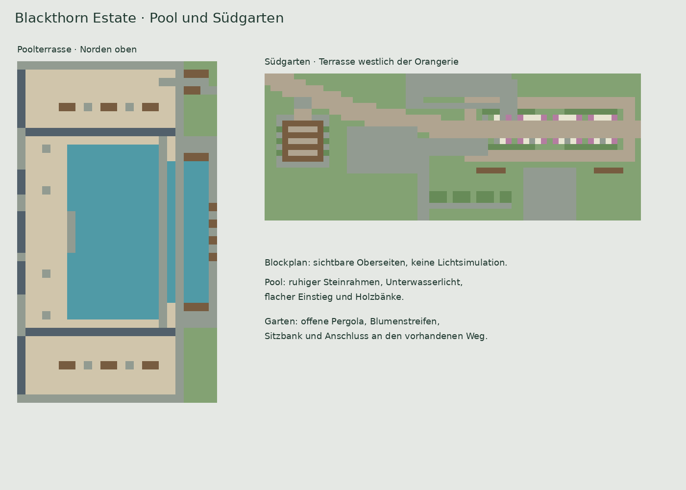

Die nächste Schicht
Eine Welt-Höhe auswählen, Blöcke nachschlagen und gesetzte Positionen abhaken.
Erkundet das Anwesen, wählt eure Bauhöhe und plant gemeinsam Material und Fortschritt.
 Poolseite · Blick nach Osten
Poolseite · Blick nach OstenEine Welt-Höhe auswählen, Blöcke nachschlagen und gesetzte Positionen abhaken.
Original und Ziel vergleichen. Abtrag und Auffüllung mit genauen Koordinaten lesen.
Bestände, Häkchen und Lagerplätze im Team aktualisieren. Alle sehen denselben Stand.
Schachbrettboden auf Y 95 und Außenwände bis Y 127 bleiben Grundlage. Untere Nebenräume, ein Großlager in voller Höhe und eine freie Porter-Galerie ersetzen die alten Kelleretagen.

In der Zielansicht wird die alte Geländehaut innerhalb des Kellers ausgespart. Die Ansicht „Historisches Originalgelände“ zeigt weiterhin den früheren Weltstand.
Y 80–88 · 1,559 Baupositionen
Y 95–101 · 6,867 Baupositionen
Y 102–123 · 49,308 Baupositionen
Y 124–128 · 35,369 Baupositionen
Y 129–136 · 15,093 Baupositionen
Y 137–144 · 14,986 Baupositionen
Y 145–171 · 17,100 Baupositionen
X −709…−659 · Z 767…780 · Boden Y 124. Vier Blöcke Raumhöhe über dem Boden; keine Möbel oder Schaltungen im Reservestreifen. Farbige Bodenlinien zeigen Chunkgrenzen. Perlenkammer, Auslöser und Verkabelung jedes Porters innerhalb eines passenden Chunks platzieren.
Die Vorlagen für eure bereits gebauten Porter sind nicht Bestandteil des Hausmodells. Auch die automatische Erkennung zählt den freien Ausbauplatz nicht als fertig gebaute Porterschaltung.
Der südöstliche Leiterzugang bei X −661 / Z 803 verbindet Boden Y 95, Lager Y 102, Galerie Y 124 und EG Y 129. Eine zweite Leiter in der neuen Nische außerhalb der Westwand führt bei X −712 / Z 776 zum Gang auf Y 80. Drei Blöcke Kopfraum im unteren Gang sind freigehalten.
Umbaufolge und Prüfgrenzen herunterladenRuhige Poolterrasse, breiter flacher Einstieg, Unterwasserlicht und Sitzplätze. Im Südgarten ergänzt eine offene Pergola die Rosenterrasse.
Zwei getrennte Zugänge verbinden Haus und Keller sowie Keller und tiefen Geheimgang. Jeweils links führt die Blasensäule nach oben, rechts der Fallschacht mit Wasserlandung nach unten. Hauszugang: X −669 / −667, Z 801. Tiefer Zugang: X −714 / −712, Z 779. Der bestehende Kellerboden auf Y 95 bleibt vollständig erhalten.
Der neue Geheimsalon am Gang besitzt 15 × 14 Blöcke Innenfläche und sieben Blöcke Raumhöhe. Bestehende Haupttreppe und Leiterzugänge bleiben vorhanden. Wasserstopp-Schilder und alle Säulen vor Nutzung im Spiel prüfen.
Blocknummern gelten für Revision 6.0. Häkchen werden anhand der Weltkoordinaten gespeichert. Das vollständige Backup unter „Bauplan“ enthält auch diesen Blockstatus; ältere nummernbasierte Stände werden nicht automatisch übernommen.
| Nr. | X | Y | Z | Minecraft-Block | Bauteil | Status |
|---|
Bodenleuchten aus Durchgängen entfernt, kurze Deckenaufhängungen ergänzt. Originale Kronleuchter und Terrassenleuchten bleiben erhalten.
| Leuchte | Bereich | Weltkoordinate | Montage / Träger | Ansehen |
|---|
Die alte automatische Verteilung stellte viele Leuchten in begehbare Bodenebenen. Diese Positionen und ungenutzte Ketten wurden entfernt. Neue, sparsam gesetzte Deckenleuchten haben höchstens zwei Kettenblöcke. Metallrahmen, Bügel und warmes bzw. blaues Licht werden getrennt gezeichnet; die Seitenansicht im Ebenenplan sitzt ebenfalls auf der richtigen Höhe.
Die Leuchtenliste führt jede vorhandene Laterne mit tatsächlicher Position und Träger auf. „3D“ öffnet eine isolierte Detailansicht mit Leuchte, Kette und Träger. „Ganzes Haus“ kehrt zur Gesamtansicht zurück.
Wähle ein Modell und lade es bei Bedarf mit den originalen Minecraft-Blocktexturen. Die Lager-Litematics enthalten ihre Golems, Container und Blockdaten.
Der externe Viewer lädt seine Minecraft-Grafiken über das Internet. Beim Öffnen wird nur das gewählte Modell an structure-viewer.ewanhowell.com übergeben.
Das Hausmodell enthält Blocktypen und Blockstates. Die beiden Lager-Vorlagen werden als originale Litematic-Dateien geladen und bewahren dadurch ihre Kupfergolems, Truhen, Hopper und Blockentity-Daten. Der Einbauvorschlag ist separat dokumentiert; die Module sind noch nicht in den Haus-Bauplan oder dessen Aushub integriert.
Vergleicht den Weltstand mit der Planung. Klickt eine Spalte an: Die Arbeitsschritte und das Höhenprofil bleiben daneben sichtbar.
Die globale Höhenkarte beruht auf dem älteren Weltstand. Für euren Keller sind die aktuelle Umbau- und Freiraumliste maßgeblich.
Keller-Umbau gegenüber Bestand · V6-FreiraumlisteAbtragAuffüllungBeides in derselben SpalteOberfläche gestalten

Freie Zufahrt, zwei Formschnittinseln, weiße Blüten und zwei Holzbänke.

Südgarten mit freien Kieswegen, geordneten Blütenbeeten, Orangerie und Pavillon. Westlich ergänzt eine kleine Rosenterrasse mit offener Pergola und Sitzbank den Rundgang.

Kompakte Terrasse mit offenem Holzgerüst, Blütenstreifen, verdecktem Licht und Anschluss an den vorhandenen Kiesweg.
Die Summen enthalten sämtliche Einzelpositionen der Abtrags- und Auffülllisten. Auffüllblöcke sind bereits im Baumaterial enthalten. Der Austausch einer Steinoberfläche gegen Erde/Gras benötigt zusätzlich die aufgeführten Baublöcke.
| Chunk X / Z | Weltbereich | Spalten | Abtrag | Auffüllung | Karte |
|---|
281 × 221 vermessene Säulen aus dem gelieferten Weltstand. Die östliche Schlucht bleibt offen; tragende Poolstützen bleiben sichtbar. Die Karte ist eine Höhenfläche, keine Höhlen- oder vollständige Ingame-Simulation.
Fünf Reservefässer im unteren Keller. Notizen bleiben lokal; gemeinsame Materialmengen stehen unter Organisation → Gemeinsame Liste. Das automatisierte Großlager findet ihr unter Sortierung & Technik.
| Bucht | Kategorie / Bereich | Kapazität | Notiz / tatsächlicher Bestand | Position |
|---|
V6 verwendet ein integriertes Lager, nicht beide bisherigen Vorschlagsmodule. Die ursprüngliche Schaltungshöhe bleibt erhalten.
Ursprung X −701 / Y 102 / Z 771 · keine Rotation. Gesamtausdehnung 27 × 22 × 27 Blöcke bis X −675 / Y 123 / Z 797. Vier Chunks: X −44/−43, Z 48/49.
Die vollständige Blockgeometrie und graue Glasverkleidung stehen im Atlas und in den Materialmengen. Die folgende V6-Litematic bewahrt zusätzlich die ursprünglichen Containerdaten und Entities. Das Haus-NBT enthält nur Blöcke; für Filterinventare und Golems die V6-Litematic verwenden. Material der Vorlage nicht nochmals zur Gesamtmaterialliste addieren.
51 × 14 Bodenpositionen. Die Technik jedes Porters muss in einer zusammenhängenden Chunkzone bleiben. Die breite westliche Randfläche kann als Wartungszugang dienen.
| Zone | X-Bereich | Z-Bereich | Chunk |
|---|---|---|---|
| West | −703…−690 | 769…780 | −44 / 48 |
| Mitte | −687…−674 | 769…780 | −43 / 48 |
| Ost | −671…−660 | 769…780 | −42 / 48 |
Lager-Inbetriebnahme, Golem-Verhalten, Filterbelegung und Chunk-Laden sind im Spiel zu prüfen. Die Schaltung wurde nicht simuliert. Der zentrale Leiterzugang übernimmt Personenverkehr; eine neue automatische Itemverbindung ins EG ist nicht als betriebsbereit modelliert.
Automatischer Vergleich mit dem Bauplan. Nur bereits geladene Chunks werden geprüft. Die Anzeige beschreibt den letzten Prüfstand; sie ist keine vollständige Prüfung von Redstone-Funktion, Inventaren oder freien Durchgängen.
Mit eurem Teamcode anmelden. Der Zugriff funktioniert auf der veröffentlichten Website.
„Ungeprüft“ zählt nicht als fertig oder fehlend. Ein grüner Block kann bereits vor Baubeginn vorhanden gewesen sein. Blockzustände werden nur geprüft, soweit sie im Bauplan angegeben sind.
| Bauteil | Richtig / Gesamt | Fortschritt | Ungeprüft |
|---|
| Position | Erwarteter Block | Prüfstand | Ansicht |
|---|
Das Plugin benötigt den passenden Bauplan, den Weltnamen und einen separaten Schreibtoken. Der Teamcode dient nur zum Lesen auf dieser Website.
Paper-Plugin herunterladen Installationsanleitung herunterladenHaus und Keller ohne Gelände und Nebengebäude.
72.070 Items Haus und Keller · 6.048 Außenanlagen und Nebengebäude · 61.865 Gelände. Die große Erd- und Bruchsteinmenge liegt in der Auffüllung.
Die Mengen beschreiben den Zielplan. Vorhandene Blöcke und wiederverwendbarer Aushub reduzieren den zusätzlich zu beschaffenden Bedarf. Erdarbeitslisten nicht nochmals zur Gesamtmaterialliste addieren.
Ausführlicher Prüfbericht · Zusatzmaterial Keller gegenüber eurem Bestand · Vergleich mit altem Weltstand| Material | ID | Anzahl | Verpackt |
|---|
Türen und Betten zählen je einmal. Flüssigkeiten und bewegte Kolbenköpfe sind keine zusätzlichen Items. Ein doppelter Plattenblock benötigt zwei Platten. Geeignete Steintreppen: Steinsäge 1 zu 1, Werkbank 6 Vollblöcke zu 4 Treppen. Platten: jeweils 1 Vollblock zu 2 Platten. Das integrierte V6-Lager ist bereits enthalten. Inventarinhalte und Entities sind keine zusätzlichen Baupositionen.
| X | Y | Z | Block | Zustand | Bauteil |
|---|
Das Großlager ist in den Gesamtmaterialmengen enthalten. Für den aktuellen Kellerbestand die V6-Umbau- und Zusatzmaterialliste verwenden. Globale Geländekarten beruhen weiterhin auf dem älteren Weltstand.